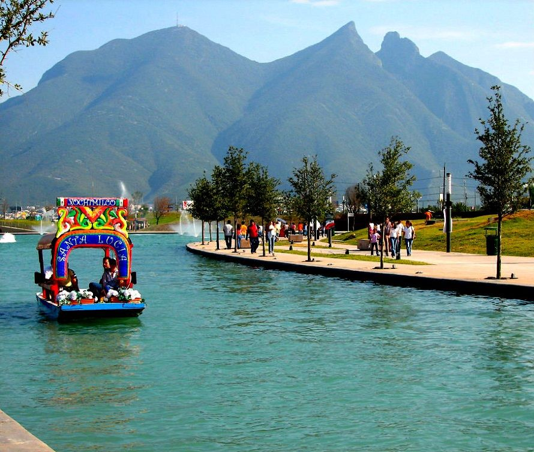
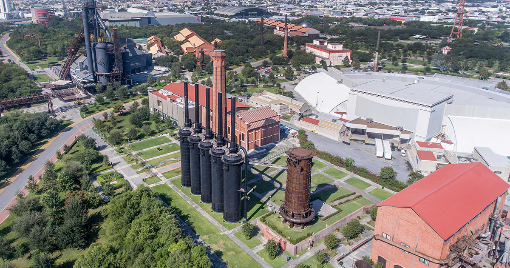

Imagenes de Monterrey

Cerro de la Silla
Visita Monterrey con tu familia

Paseo Santa Lucia
Visita Monterrey con tu familia

Parque fundidora
Visita Monterrey con tu familia
Informacion sobre estos lugares
El Cerro de la Silla es una montaña que forma parte del sistema de estribaciones de la Sierra Madre Oriental, El Cerro de la Silla fue decretado como Área Natural Protegida, con la categoría de Monumento natural, el 26 de abril de 1991, mediante un decreto presidencial, publicado en el Diario Oficial de la Federación el día 25 del mismo mes y año.
Canal con senderos, murales al aire libre y viajes en bote al Museo de Historia Mexicana.
El Parque Fundidora es un parque público localizado en la ciudad de Monterrey, Nuevo León, y se encuentra en los terrenos que ocupó la compañía Fundidora de Fierro y Acero de Monterrey de 1900 a 1986.El parque se localiza en la antigua colonia Obrera al oriente del centro de Monterrey